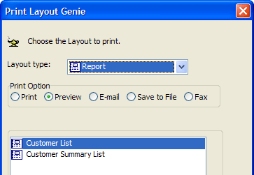
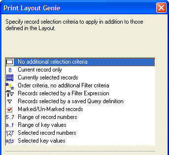
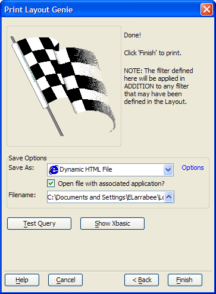

Print Layout Genie
The Print Layout Genie lets you print, preview, email, save to file, or fax the records in the current Table or Set, using any of the layouts that have been defined for that table or set.

To open the Print Layout Genie when you are viewing a form or browse, select File > Print/Send Selected Records....
Optionally, select a different form from the Layout type list. The options are: "Form", "Browse", "Report", "Letter", and "Label".
Select your print option by clicking the Print, Preview, Email, or Save to File radio buttons.
Pick the layout to use from the list box. The list may be empty if there are no layouts of the selected type defined for this table.
Click Next >.
Specify the record selection criteria to apply (in addition to those defined in the layout). There are many options.

Click Next >.
Optionally, click Test Query to see how many records will be selected.
Optionally, click Show Xbasic to see the Xbasic code that will execute this query.
If you clicked the Email button in step 3:
Click Send Options and make a selection from the Send As list. The options are:
"Adobe Acrobat PDF File" (See note below)
"Dynamic HTML File"
"Rich Text Format File"
"Plain Text File"
Make a selection from the Sending Using list. The options are:
"Default E-Mail Client"
"Alpha Anywhere E-Mail Client"
Optionally, click Options to display the <span class=Screen>Options</span> dialog to control more formatting and processing steps.
If you clicked the Save as File button in step 3:
Make a selection from the Save as list. The options are:
"Adobe Acrobat PDF File". Can be displayed with Adobe Acrobat Reader. (See note below)
"Dynamic HTML File". Can be displayed with a browser.
"Rich Text Format File". Can be displayed with Microsoft Word or Microsoft Wordpad.
"Plain Text File". Can be displayed with Microsoft Notepad and many other text editors.
Optionally, un-check Open file with associated application if you do not want to see the results.
Enter the name of the file you are going to create in the Filename field.
Optionally, click Options to display the <span class=Screen>Options</span> dialog to control more formatting and processing steps.
Click Finish to continue or Cancel to quit.

 Note : The PDF Printer
drivers used in Version 7 will not create valid PDF files if you have
created layouts that use a "percentage" as the property
for the Background Fill property an object. The work around is to only
use the "Solid", "Translucent" or "Transparent"
option for the Background, Fill property.
Note : The PDF Printer
drivers used in Version 7 will not create valid PDF files if you have
created layouts that use a "percentage" as the property
for the Background Fill property an object. The work around is to only
use the "Solid", "Translucent" or "Transparent"
option for the Background, Fill property.
See Also